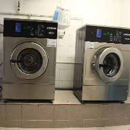
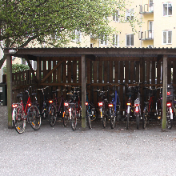
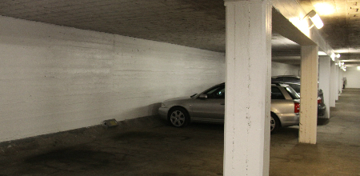
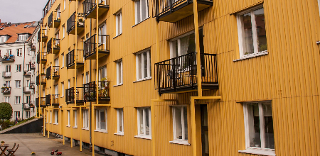
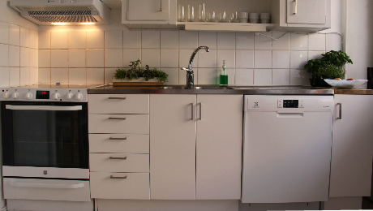

Plantagelyckan 7
Välkomna till Plantagelyckan 7!
Fastigheten Plantagelyckan 7 uppfördes 1936 och är belägen i centrala Lund med närhet till universitetet, järnvägsstationen, universitetssjukhuset m.m. Den innehåller 47 lägenheter för uthyrning fördelat på 1-rummare med kokvrå, 1-4-rummare med kök och balkong. Lägenhetesytorna spänner mellan 29 och 119 kvm. I fastigheten finns dessutom garage.
Om fastigheten
Uppvärmining och Ventilation
Uppvärming sker med fjärrvärme. Ventilationen är självdrag varför endast kolfilterfläktar i kök är tillåtna.
TV och Bredband
Fastigheten är ansluten till ComHems kabelnät.
Gemensamma Utrymmen
Tvättstuga och torkrum är dimensionerat för att användas 1 gång per hushåll varannan vecka.
Källarförråd 1 per hushåll.
Cykelparkering finns på gårdsplanen.
Sopstation finns på gårdsplanen. Tömning sker 2 ggr/vecka för hushållsavfall och kartong. Övriga sopor 1ggr/vecka eller varannan vecka.
I garaget finns uppställningsplats för 37 fordon. Platserna är i första hand ämnade för boende i huset men upplåtes i mån av tillgång till andra.
Fastigheten har även nya balkongräcken från 2015.
Aktuellt
Aktuellt
- Elbilar och hybrider blir allt vanligare. Intressaanmälan gällande laddning kontakta förvaltaren.
- Brandvarnare som upphört att fungera lämnas till vaktmästaren som samtidigt lämnar ut en ny.
Genomförda åtgärder
- Nya hissar installerades under våren och sommaren 2017.
- Åt gårdssidan installerades nya balkongräcken sommaren/hösten 2015. För gäster som monterar vind-/insynsskydd gäller grå markisväv av fabrikat Sanitex, art.nr 727/15, färgkod S5000-N.
- Ommålning av garaget utfördes sommaren 2014.
- Fönstermålning mot kävlingevägen genomfördes våren 2014.
- Energiglas installerades våren och sommaren 2013 mot kävlingevägen för att dämpa bullernivån samt eliminera kallras i lägenheterna.
- Renovering av avloppsrören (relining) genomfördes hösten och vintern 2013.
- Ny garageport monterades sommaren 2012.
Modernisering av kök
Vi erbjuder nu hyresgäster att modernisera köken med ny diskbänk, installation av induktionsspis och kolfilterfläkt samt diskmaskin
Hyrestillägg:
- Diskbänk 160cm: 214kr/mån
- Diskmaskin: 168kr/mån
- Induktionsspis: 132kr/mån
- kolfilterfläkt: 42kr/mån
(intresseanmälan lämnas till förvaltaren)